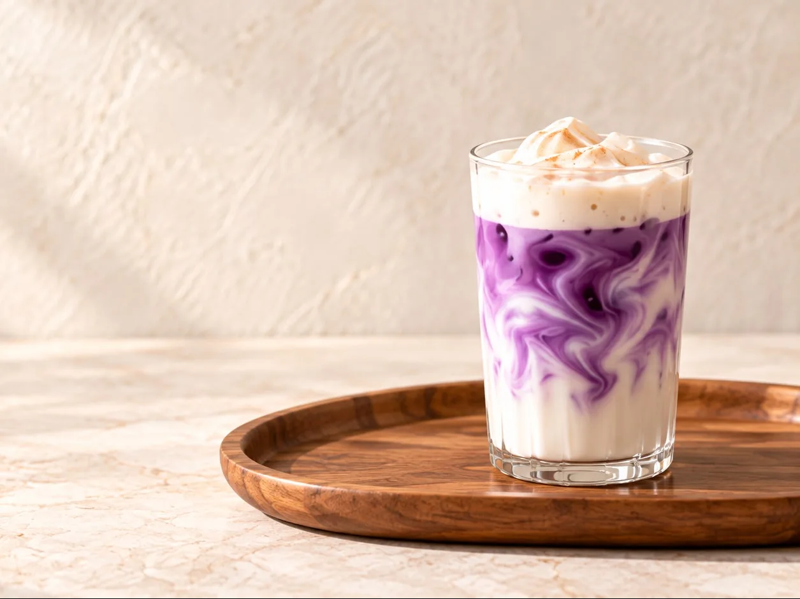
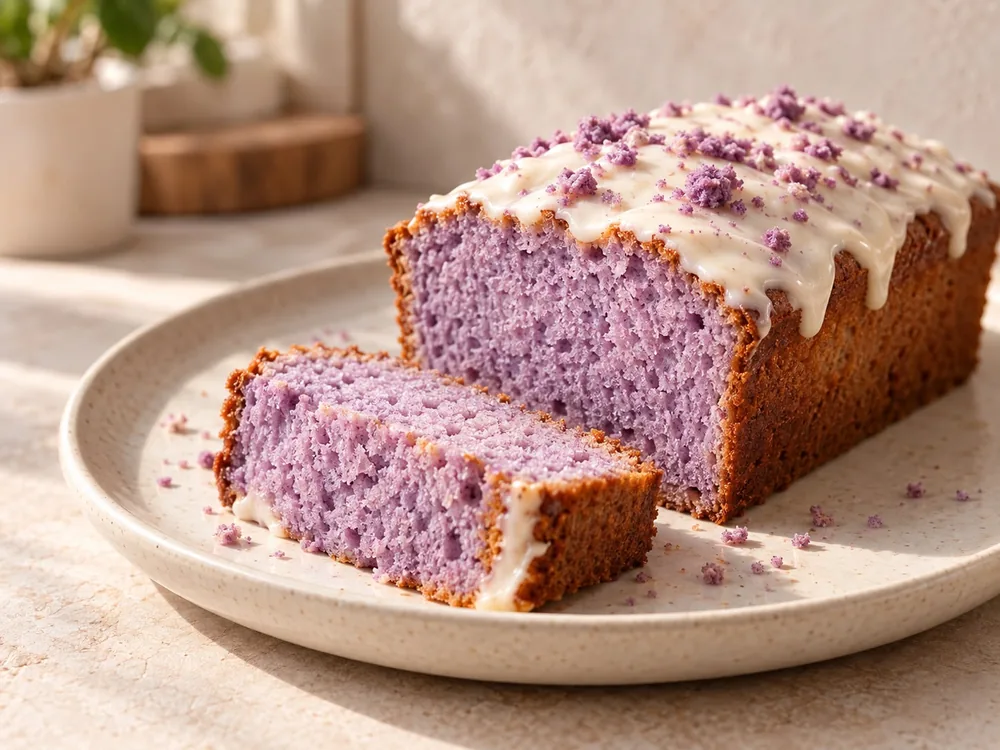
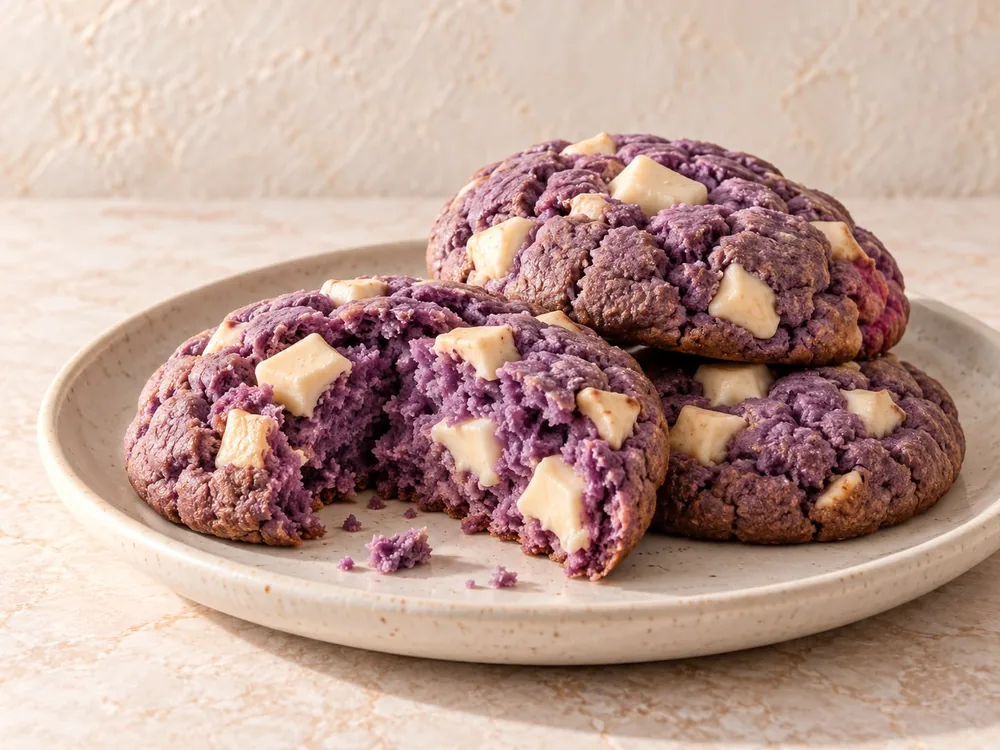
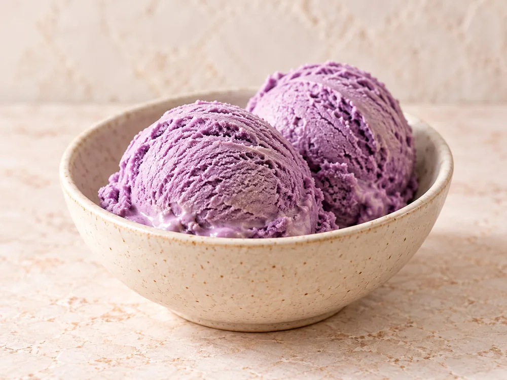
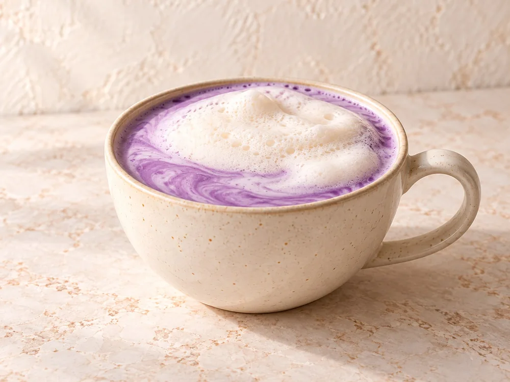
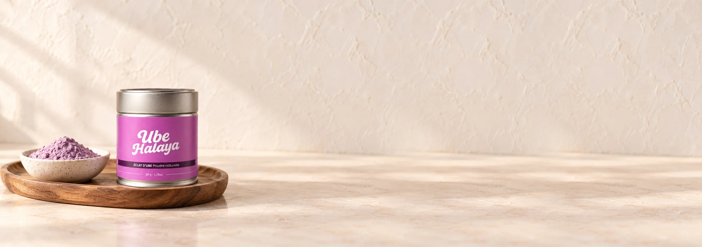

Notre signature
Notre signatureÀ chaque envie, sa recette.
L’ube se met à table.
Des idées à préparer, à goûter, à partager.
Seule la poudre Éclat d’Ubé est vendue : lait, crème et autres ingrédients sont à prévoir.

Nos recettes
Notre signature
Cake à l’ube
Voir la recette
Cookies à l’ube
Voir la recette
Glace à l’ube
Voir la recette
Latte chaud à l’ube
Voir la recetteVotre premier latte, en trois gestes.


Notre signature
Latte glacé, mousse vanille
- 5 minpréparation
- 1 verrede 30 cl
- Faciledifficulté
Ingrédients
- 2 à 3 g d’Éclat d’Ubé (1 c. à café rase)
- 3 cl d’eau chaude, non bouillante
- 20 cl de lait froid
- Sucre ou sirop, selon votre goût
- Glaçons
- 5 cl de crème liquide entière et ½ c. à café de vanille
Préparation
- Déposez la poudre dans un bol et versez l’eau chaude.
- Mélangez au mousseur jusqu’à obtenir une base lisse, sans grumeaux.
- Sucrez à ce stade : le sucre se dissout mieux dans la base chaude.
- Versez la base violette dans un verre rempli de glaçons.
- Ajoutez le lait doucement, sans mélanger, pour garder l’effet marbré.
- Fouettez la crème et la vanille en mousse souple et déposez-la sur le dessus.
Pour les matins frais
Latte chaud à l’ube
- 5 minpréparation
- 1 tassede 25 cl
- Faciledifficulté
Ingrédients
- 2 à 3 g d’Éclat d’Ubé (1 c. à café rase)
- 3 cl d’eau chaude, non bouillante
- 20 cl de lait, animal ou végétal
- Sucre ou sirop, selon votre goût
Préparation
- Déposez la poudre dans une tasse et versez l’eau chaude.
- Mélangez au mousseur jusqu’à obtenir une base lisse, puis sucrez.
- Chauffez le lait sans le faire bouillir.
- Faites-le mousser quelques secondes au mousseur.
- Versez le lait sur la base en retenant la mousse, puis déposez-la sur le dessus.
- Tracez une vague avec la pointe d’une cuillère pour marbrer la mousse.
Pour le goûter
Cake à l’ube
- 1 h 05dont 50 min de cuisson
- 8 partsmoule à cake
- Faciledifficulté
Ingrédients
- 12 g d’Éclat d’Ubé
- 3 œufs
- 150 g de sucre
- 150 g de beurre fondu
- 200 g de farine et 1 sachet de levure chimique
- 12 cl de lait
- Glaçage : 100 g de sucre glace et 2 c. à soupe de lait
Préparation
- Préchauffez le four à 180 °C et beurrez un moule à cake.
- Fouettez les œufs et le sucre, puis ajoutez le beurre fondu et 10 cl de lait.
- Incorporez la farine et la levure tamisées.
- Délayez la poudre d’ube dans les 2 cl de lait restants, bien chauds, et mélangez-la à la moitié de la pâte.
- Versez les deux pâtes en alternance dans le moule et tracez des vagues au couteau.
- Enfournez 45 à 50 minutes, laissez refroidir puis nappez de glaçage.
À partager
Cookies à l’ube
- 30 mindont 12 min de cuisson
- 12 cookiesenviron
- Faciledifficulté
Ingrédients
- 10 g d’Éclat d’Ubé
- 125 g de beurre mou
- 100 g de sucre roux et 50 g de sucre blanc
- 1 œuf
- 200 g de farine, ½ c. à café de levure et 1 pincée de sel
- 100 g de chocolat blanc en pépites
Préparation
- Préchauffez le four à 180 °C et couvrez une plaque de papier cuisson.
- Mélangez le beurre mou et les deux sucres, puis ajoutez l’œuf.
- Incorporez la farine, la levure, le sel et la poudre d’ube.
- Ajoutez les pépites de chocolat blanc.
- Formez 12 boules bien espacées sur la plaque.
- Faites cuire 11 à 12 minutes : le centre doit rester tendre.
Sans sorbetière
Glace à l’ube
- 15 minet 6 h au congélateur
- 8 boulesenviron
- Faciledifficulté
Ingrédients
- 10 g d’Éclat d’Ubé
- 2 c. à soupe de lait chaud
- 40 cl de crème liquide entière, très froide
- 1 boîte de lait concentré sucré (397 g)
- ½ c. à café de vanille
Préparation
- Délayez la poudre d’ube dans le lait chaud jusqu’à obtenir une pâte lisse.
- Mélangez-la au lait concentré et à la vanille.
- Fouettez la crème bien froide en chantilly ferme.
- Incorporez la chantilly au mélange violet en deux fois, délicatement, à la spatule.
- Versez dans une boîte, couvrez et placez au congélateur au moins 6 heures.
- Sortez la glace 10 minutes avant de former les boules.
